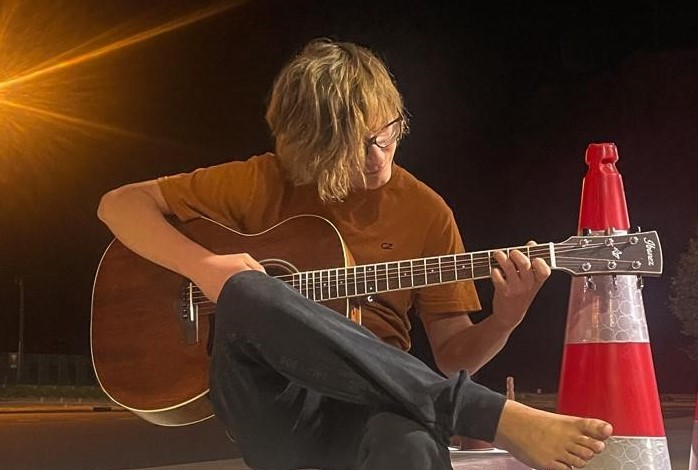
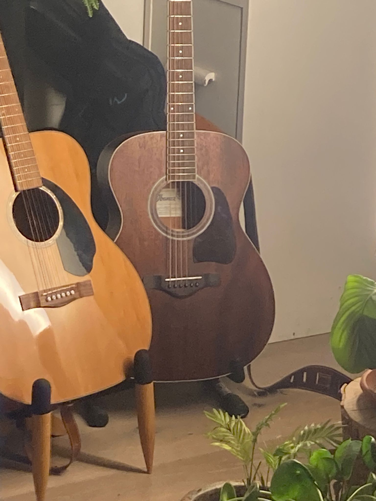

Zupfend Laut

Ich spiele seit März 2023 Gitarre, also zur Zeit der Entwicklung dieser Webseite seit
9 Monaten (vom Anfang März 2023 bis Mitte November 2023).
Zuerst wollte ich eigentlich nur ein Lied lernen, um es auf einem Campingplatz, den ich jedes Jahr aufs
Neue besuche, am Feuer zu spielen. Nämlich eine umgeschriebene Version des Mani Matter Songs: "Si hei
dr Wilhälm Täll ufgfüehrt", die eine humorvolle Geschichte innerhalb des Campingplatzes erzählt.
Während des Lernens dieses Liedes habe ich sehr viel Freude am Gitarrespielen gehabt und wurde
davon so mitgerissen, dass ich nach 9 Monaten immer noch regelmäßig spiele.
Am Gitarre spielen fasziniert mich, dass ich selbst die Musik spiele. Die Klänge, die ich
erzeuge, kommen von mir selbst. Besonders das Gefühl des Fingerpickings, das Zupfen der einzelnen
Saiten, hat für mich etwas Angenehmes. Mir gefallen auch kompliziertere Zupfmuster,
die Fingerfertigkeit erfordern. Außerdem fasziniert es mich, die Musik, die ich spiele,
richtig fühlen und verändern zu können.

Am Anfang habe ich mit der Gitarre meines Bruders, Timo, gespielt, da ich ursprünglich
ja nur dieses eine Lied lernen wollte. Die Gitarre von Timo (mein Bruder) ist auf dem Bild
links zu sehen (die hellere Gitarre). Wie ihr wahrscheinlich schon bemerkt habt, ist auf dem
Foto auch eine zweite Gitarre, meine Gitarre. Ich habe nämlich zwei Monate vor meiner
Konfirmation mit dem Gitarrespielen angefangen und mir dann zu meiner Konfirmation eine
eigene Gitarre geholt: Die AC340-OPN Art Wood Gitarre von Ibanez.
Mittlerweile gibt es schon einige Gitarrenlieder, die ich professionell spielen kann.
Also nicht nur mit den dazugehörigen Akkorden simpel strummen, sondern so spielen, wie es
im Originalsong auch klingt oder gespielt wird, hauptsächlich mit Fingerpicking. Einige der
Songs, die ich (richtig) spielen kann, sind:
- Pirates of the Caribbean Theme (Hans Zimmer)
- I See Fire (Ed Sheeran)
- Let her go Intro (Passenger)
- Dust in the Wind (Kansas)
- Kids in Love (Pink, First Aid Kit)
- Alles Gute (Faber)
- Blackbird (Beatles)
- Das ist alles von der Kunstfreiheit gedeckt (Danger Dan)
- Hallelujah (Pentatonix)
- Sunrise (Norah Jones)
- Gravity Falls Theme Song (Brad Breeck)
- Donna Donna (Joan Baez)
- Dust in the Wind - Gesungene Stimme (Kansas)
- Widerstand (Faber)
Ich habe auch noch einige Melodien selbst komponiert und somit eigene Stücke entwickelt.